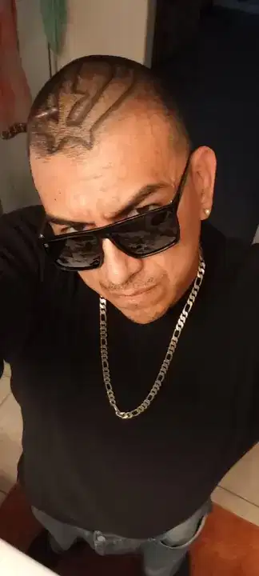
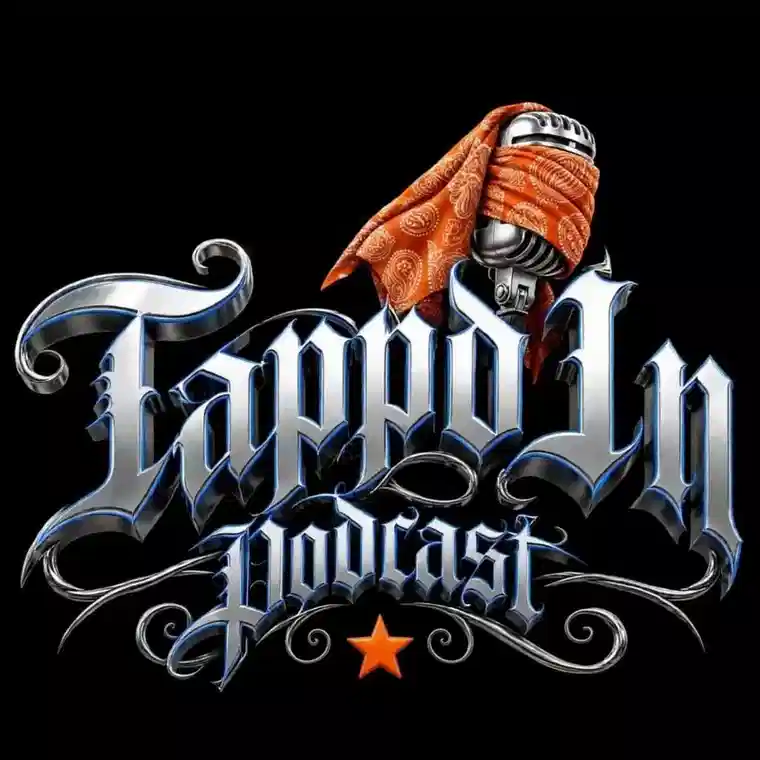
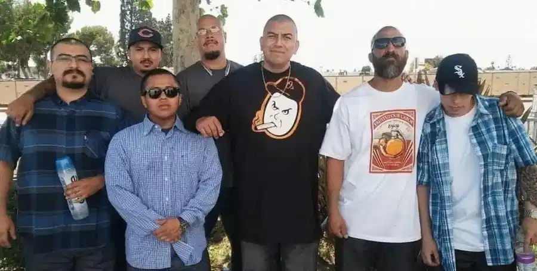
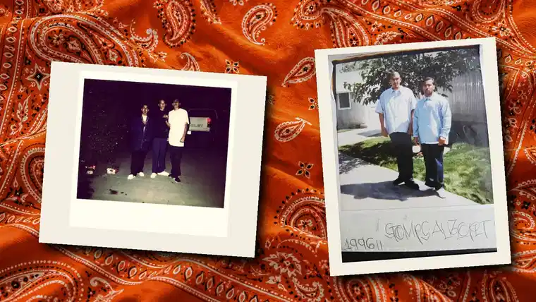
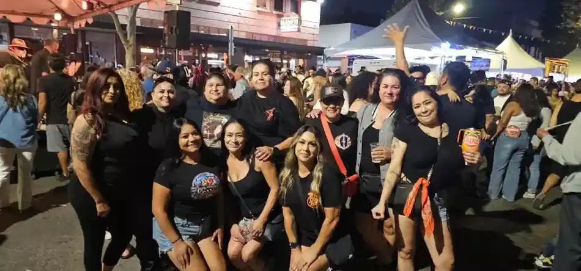

01 / LEAD MICMAIN HOST
O-CREEP.
Setting the tone. Leading the conversation.

TAPPD INPODCASTFOLLOW THE MOVEMENT ↗FOR THE STREETS. BY THE STREETS.
Unfiltered conversations. Real people. The stories that shape OC. This is Tappd In Podcast.
Tappd In brings the personalities, experiences, and conversations of OC together. No polished scripts. No pretending. Just the culture, told by the people living it.
STEP INTO OUR WORLD ↗
THREE DISTINCT PERSPECTIVES.
ONE REAL CONVERSATION.

01 / LEAD MICSetting the tone. Leading the conversation.
Bringing his perspective to the table.
A voice all her own.


Got something to say, a story to share, or a collaboration in mind? Tap in.
CONNECT WITH THE CREW ↗